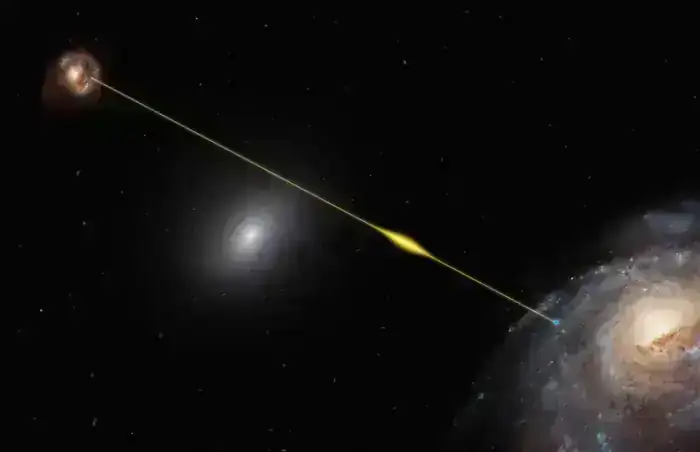
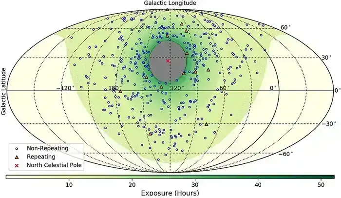
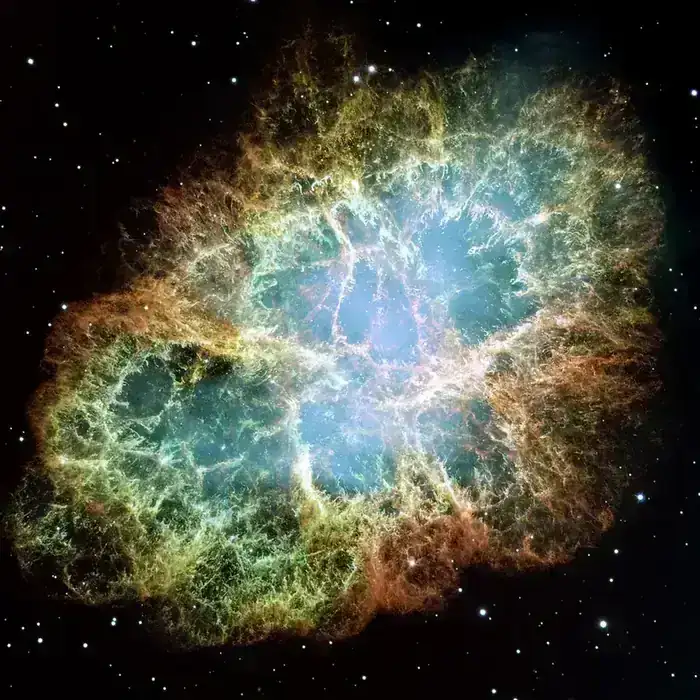

The bursts
Fast radio bursts are millisecond flashes of radio emission from distant galaxies, first detected in 2007. Hundreds are known, some repeating, and the leading explanations involve magnetars — highly magnetised neutron stars.
Maps, diagrams and images





The sails
A 2017 paper proposed that the bursts could be leakage from light sails propelling spacecraft. The proposal requires an enormous number of emitters, makes no successful prediction, and has been superseded by magnetar evidence, including a burst from a known galactic magnetar in 2020.
The archive files it as fringe.
Documented: the bursts.
Supported: the magnetar explanation.
Proposed: light sails, 2017.
Not supported: by later evidence.
The honest label: fringe.
Why it is in the archive
Because it is the case where the exotic explanation lost to a better one within three years.
Open resources on this topic
- PapersOpen-access articles: DOAJ · PubMed Central · Internet Archive Scholar
- BooksPublic-domain and borrowable copies: Open Library · Project Gutenberg · Google Books · Internet Archive
Cite this page
Momin, S. (2026). FRBs as Light Sails. The Larger World Archive. https://drsamonline.github.io/LARGE_GLOBE/frbs-light-sails.htmlMomin, Sohil. “FRBs as Light Sails.” The Larger World Archive, 2026, https://drsamonline.github.io/LARGE_GLOBE/frbs-light-sails.html.Momin, Sohil. “FRBs as Light Sails.” The Larger World Archive, 2026. https://drsamonline.github.io/LARGE_GLOBE/frbs-light-sails.html.@misc{frbs2026frbs,
author = {Momin, Sohil},
title = {FRBs as Light Sails},
year = {2026},
howpublished = {The Larger World Archive},
url = {https://drsamonline.github.io/LARGE_GLOBE/frbs-light-sails.html},
note = {Last reviewed 20 November 2026}
}Last reviewed 20 November 2026 · Corrections policy · this page is not peer reviewed
Sources for this page
- Wikipedia, “Fast radio burst” — the phenomenonen.wikipedia.org
- Wikipedia, “Magnetar” — the leading explanationen.wikipedia.org
- Wikipedia, “Solar sail” — the proposed mechanismen.wikipedia.org
- Wikipedia, “CHIME” — a detecting telescopeen.wikipedia.org